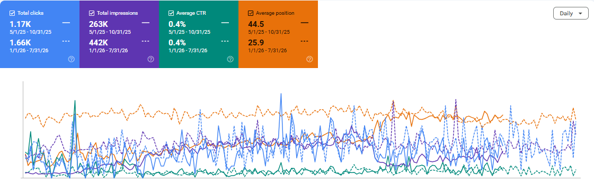

Pestigo
SEO strategy focused on Local SEO, keyword research, technical SEO, on-page optimization, content strategy and location-based search visibility.
Project Overview
Pestigo is a pest control website targeting customers searching for pest control and extermination services.
The SEO campaign focused on improving organic visibility, targeting commercially relevant pest control keywords, strengthening local search relevance and developing location-focused content.
SEO Objectives
Local Visibility
Improve visibility for location-based pest control searches.
Keyword Rankings
Target relevant pest control and exterminator keywords.
Organic Traffic
Increase relevant organic search visibility and traffic.
Lead Generation
Target commercial searches with strong service intent.
Local SEO Strategy
Local SEO was a major part of the campaign, with the strategy focused on connecting pest control services with location-specific search intent.
- Local keyword research
- City-based keyword targeting
- Service-area optimization
- Location-focused landing pages
- Google Business Profile optimization
- Local citation opportunities
- Location-based content strategy
- Internal linking between services and locations
Keyword Research
Keyword research focused on commercial searches from users actively looking for pest control services.
Pest Control
Core pest control service keywords.
Exterminator
Commercial exterminator-related searches.
Location Keywords
Pest control searches combined with target cities.
Long-Tail Keywords
Specific searches with strong commercial intent.
On-Page SEO
Important service and location pages were optimized around search intent and topical relevance.
- SEO title optimization
- Meta description optimization
- Heading structure optimization
- Keyword placement
- Service page optimization
- Location page optimization
- URL optimization
- Image optimization
- Internal linking
- Schema markup opportunities
Content Strategy
Content opportunities were developed around pest-related problems, services and location-based searches.
Technical SEO
- Technical SEO audits
- Crawl analysis
- Indexation checks
- Canonical URL analysis
- Broken link analysis
- Redirect analysis
- XML sitemap review
- Robots.txt review
- Page speed analysis
- Core Web Vitals review
Internal Linking Strategy
Internal linking was used to strengthen relationships between service pages, location pages and informational content.
Service → Location
Connected pest control services with relevant location pages.
Blog → Service
Used informational content to support commercial service pages.
Location → Service
Strengthened topical relationships between local pages and services.
SEO Tools Used
Google Search Console
Search performance, indexing and query analysis.
Semrush
Keyword research, competitor analysis and rankings.
Screaming Frog
Technical crawling and SEO auditing.
Google Analytics
Organic traffic and user behaviour analysis.
SEO Results & Performance
The SEO campaign generated measurable growth in organic search visibility, clicks and average search position.
+41.9%
Organic clicks increased from 1.17K to 1.66K.
+68.1%
Search impressions increased from 263K to 442K.
44.5 → 25
Average search position improved by 19.5 positions.
0.4% → 0.4%
CTR remained stable during the comparison period.
Organic clicks increased by 41.9%, while search impressions increased by 68.1%.
Average search position improved from 44.5 to 25, demonstrating stronger organic visibility across targeted searches.
Google Search Console Performance
Google Search Console data was used to monitor organic clicks, impressions, CTR and average search position during the campaign.
Organic Clicks
1.17K → 1.66K
41.9% increase in organic clicks.
Search Impressions
263K → 442K
68.1% increase in search visibility.
Average Position
44.5 → 25
19.5-position improvement.
CTR
0.4% → 0.4%
CTR remained stable during the comparison.

Key Learnings
- Local search intent is essential for service businesses.
- Service and location keywords should be strategically connected.
- Internal linking can strengthen topical relevance.
- Location-focused content can support commercial landing pages.
- SEO results should be presented using verified data.